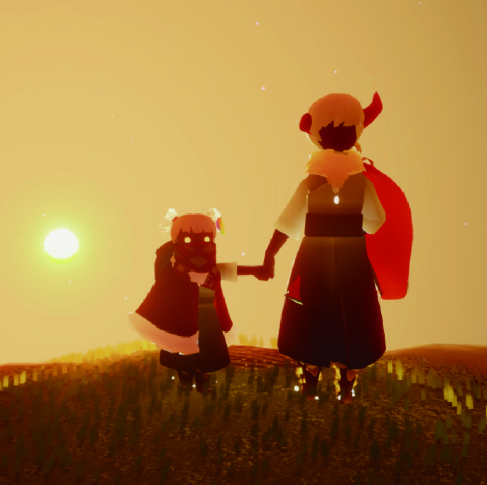

特色系統

任務系統
遊戲擁有“每日任務”，玩家可在境遇通往雲國各地的石門前的先祖處領取。這些任務有追光型、特殊型、多人型，以及尋找每日的冥想神壇並在神壇前進行祈禱等多種類型。

社交機制
遊戲擁有獨特的“陌生人社交”機制，遊戲中的社交機制不再是單純滿足聊天、組隊等需求的功能系統，“社交”承載了遊戲的部分核心情感體驗。

奇妙之旅（季節）
光遇約每一個月就會迎來一個新的季節，每個季節持續時間為2～3個月。季節期間可以用季節蠟燭（黃蠟燭）與季節先祖兌換季節專屬物品。